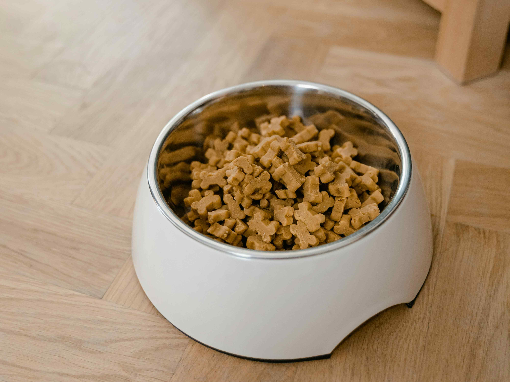
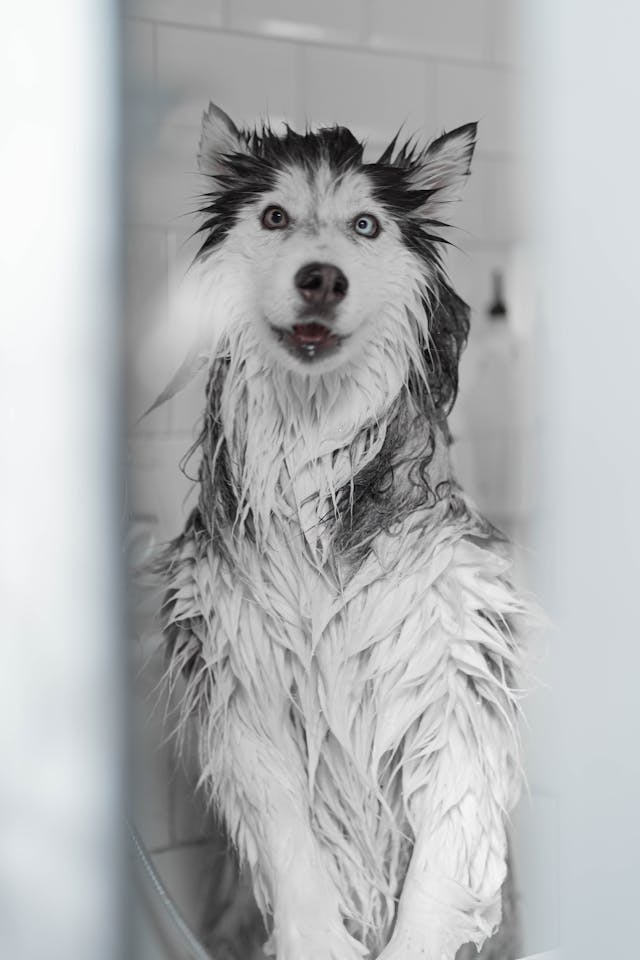

Îngrijirea câinilor

Alimentația
- O dietă echilibrată este baza sănătății.
- Poți alege hrană uscată (boabe), umedă sau gătită acasă (cu recomandarea veterinarului).
- Evită alimentele toxice: ciocolată, ceapă, usturoi, struguri.

Igiena
- Baia: o dată la 3–6 săptămâni (în funcție de rasă).
- Periajul: zilnic sau săptămânal, mai ales pentru câinii cu blană lungă.
- Curățarea urechilor și tăierea unghiilor sunt foarte importante.
3. Sănătatea
• Vaccinuri regulate și deparazitări.
• Vizite periodice la medicul veterinar.
• Atenție la semne de boală: letargie, lipsa apetitului, comportament schimbat.
4. Mișcare și stimulare
• Plimbări zilnice (cel puțin 30–60 minute).
• Jocuri și activități pentru stimulare mentală.
Nutriția câinilor este unul dintre cei mai importanți factori pentru sănătatea, energia și longevitatea lor. Nu e doar despre „ce mănâncă”, ci și despre cât, când și cum.
⸻
🥩 Tipuri de hrană
1. Hrană comercială
• Uscată (crochete) – practică, ajută la sănătatea dentară.
• Umedă (conserve/plicuri) – mai gustoasă, conține mai multă apă.
• Alege produse de calitate, adaptate vârstei, taliei și nivelului de activitate.
2. Hrană gătită acasă
• Poate fi sănătoasă dacă este echilibrată corect.
• Trebuie să conțină:
• proteine (carne slabă)
• carbohidrați (orez, cartofi)
• legume
• suplimente (calciu, vitamine) – doar la recomandarea veterinarului
3. Dieta crudă (BARF)
• Include carne crudă, oase, organe.
• Este controversată: poate fi benefică, dar există riscuri bacteriene dacă nu e gestionată corect.
⸻
⚖️ Nutrienți esențiali
Proteine
• Fundamentale pentru mușchi și energie.
• Surse: pui, vită, pește, ouă.
Grăsimi
• Oferă energie și ajută la o blană sănătoasă.
• Surse: ulei de pește, grăsimi animale.
Carbohidrați
• Nu sunt esențiali, dar oferă energie rapidă.
• Surse: orez, cartofi, cereale.
Vitamine și minerale
• Susțin imunitatea și funcțiile organismului.
Apă 💧
• Extrem de importantă – câinele trebuie să aibă mereu apă proaspătă.
⸻
🐕 Hrănirea în funcție de vârstă
Pui
• Au nevoie de hrană bogată în proteine și calorii.
• Mese frecvente (3–4/zi).
Adulți
• Dietă echilibrată pentru menținere.
• 1–2 mese pe zi.
Seniori
• Mai puține calorii, dar nutrienți de calitate.
• Suport pentru articulații (glucozamină, omega-3).